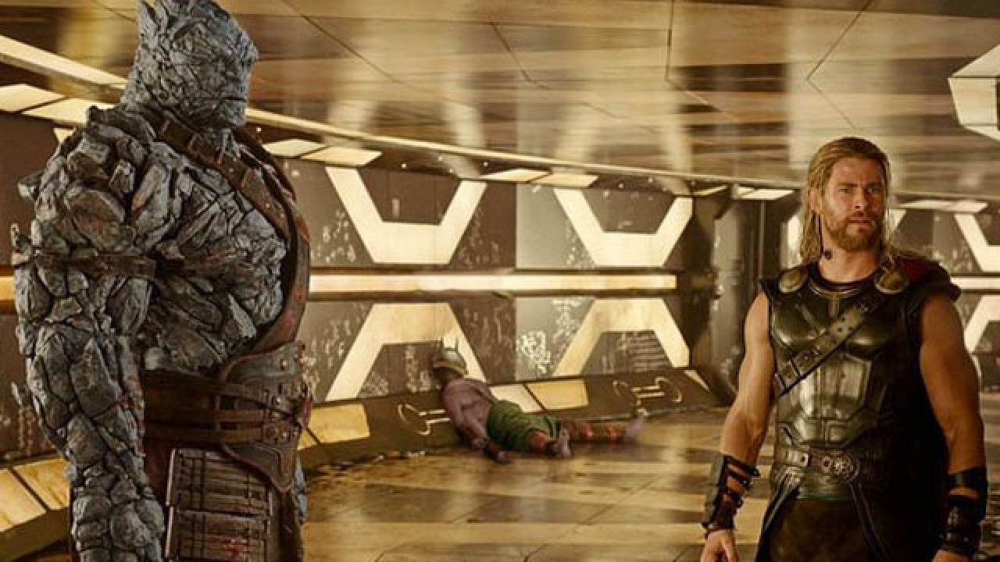

BIOGRAPHIE
Pouvoirs et Capacités
Korg est un Kronan, une race formée à partir de silicium. Sa peau pierreuse lui confère une grande résistance aux dommages ainsi qu'aux températures extrêmes. Les Kronans possèdent une espérance de vie très longue, dépassant probablement plusieurs siècles. Dans les atmosphères riches en oxygène, la force de Korg égale celle de Hulk ou de Wonder Man. Il peut donc soulever (ou exercer une pression équivalente à) près de 100 tonnes. Formé en tant que Gladiateur, Korg est un combattant expérimenté et possède de bonnes bases en stratégie d'équipe.
Les relations de Korg
Aparrition
Anecdotes